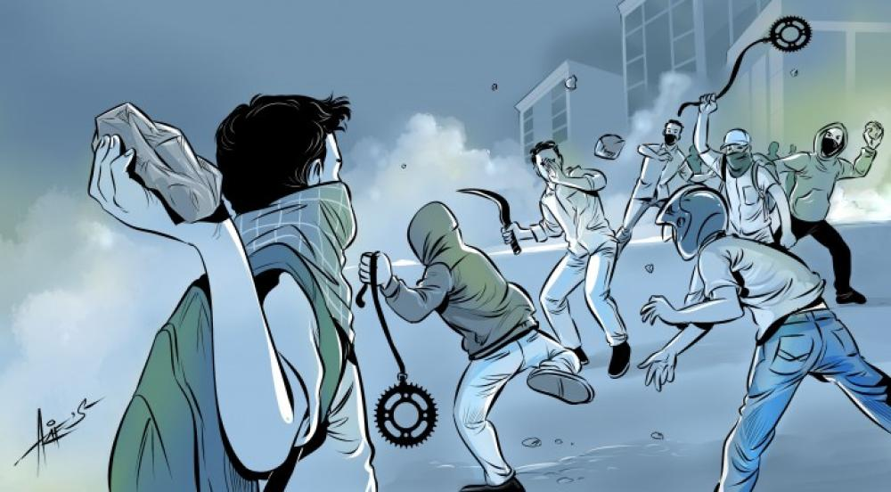

Pengenalan

Tawuran pelajar adalah fenomena sosial yang sering terjadi di kalangan remaja, khususnya di lingkungan sekolah. Tawuran ini biasanya melibatkan dua kelompok pelajar dari sekolah yang berbeda dan sering kali berujung pada kekerasan fisik. Fenomena ini tidak hanya merugikan para pelajar yang terlibat, tetapi juga dapat berdampak negatif pada masyarakat dan lingkungan sekitar.
Kesimpulan
Tawuran pelajar adalah masalah serius yang memerlukan perhatian dari berbagai pihak, termasuk sekolah, orang tua, dan masyarakat. Dengan memahami penyebab dan dampak tawuran, serta melaksanakan upaya pencegahan yang efektif, kita dapat menciptakan lingkungan yang lebih aman dan mendukung bagi para pelajar. Penting bagi kita semua untuk berperan aktif dalam mencegah tawuran dan mendukung perkembangan positif remaja.